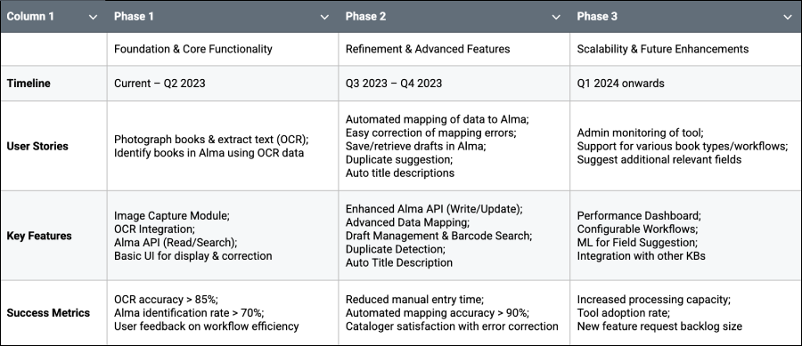

KB RetroTool
Revolutionizing Library cataloging
Leveraging AI and ML to streamline the cataloging process for the National Library of the Netherlands through automated data extraction from image capture.
Context & Contribution
The National Library of the Netherlands (KB - Koninklijke Bibliotheek) was challenged by a growing backlog of its 'Retro-collection' (tens of thousands of physical books) due to a labor-intensive manual cataloging workflow. My contribution:
- Conducted comprehensive user research to uncover cataloger workflows and pain points.
- Directed UX/UI design, translating insights into intuitive interfaces.
- Managed product backlog, strategically defining and prioritizing user stories and features.
- Led sprint planning and reviews, ensuring timely and high-quality delivery.
- Fostered cross-functional collaboration and managed stakeholder communication.
Problem & Opportunity
- Physically checking books against their database for duplicates, often requiring multiple manual searches.
- Manually transcribing key information (title, author, publisher, year) from physical books, a tedious and error-prone process.
- Creating new metadata entries from scratch for unique acquisitions, demanding specialized knowledge and significant time.
This resulted in a slow intake process, a growing backlog of tens of thousands of books, and potential inconsistencies in metadata quality.
Opportunity Landscape: Revolutionizing Library Cataloging
Leveraging OCR and AI technologies presented a strategic opportunity to revolutionize library cataloging. This initiative positioned the KB to significantly accelerate the expansion of the national collection, transforming a bottleneck into a path for digital-age growth and improved accessibility.
Discovery & Key Insights
Our discovery phase was heavily driven by user research. We conducted:
- Contextual Inquiries: Observing catalogers in their actual work environment to document their current workflow, revealing nuanced complexities and hidden inefficiencies.
- In-depth Interviews: Engaging with experienced catalogers to understand decision-making processes, challenges with unique book formats, and criteria for identifying duplicates or creating new records.
- Workflow Analysis: Mapping the step-by-step manual process to pinpoint critical touchpoints where AI/automation could provide the most significant impact.
Technical Research: Evaluating OCR, LLMs, and API Integrations
We conducted thorough technological research to identify viable solutions. This involved evaluating various OCR services for accuracy across diverse document types, assessing the capabilities of Large Language Models (LLMs) and custom Machine Learning (ML) models for intelligent data interpretation and matching, and exploring robust API integrations with internal and external data sources like Google Books.
Key Insights: Understanding the Challenges and Needs
- High Volume, Low Automation: The sheer volume of the Retro-collection (50,000+ books backlog) made manual processing unsustainable, underscoring the urgent need for automation.
- De-duplication Complexity: Identifying unique editions required meticulous comparison, necessitating a sophisticated AI matching algorithm.
- Metadata Entry Burden: Creating comprehensive metadata was time-consuming, highlighting the value of AI-driven preliminary metadata generation.
- Trust in Automation: Catalogers needed high accuracy and easy review/correction mechanisms for AI-generated data.
- Visual Data Importance: Information from title pages and colophons was paramount, requiring a robust image-to-text solution.
Vision & Strategy
The vision involved expanding the tool's capabilities to support more complex cataloging scenarios, integrate with other KB systems, and potentially automate additional steps in the book processing workflow, moving towards a more fully automated intake pipeline. This could include leveraging video capture and analysis to further accelerate the initial data extraction and quality control steps, reducing physical handling and manual inspection time.
Challenges & Risks: Navigating Integration, Accuracy, and Adoption
- Technical Integration: Connecting a new AI tool with Alma, the KB's complex library management system.
- OCR Accuracy: Ensuring high accuracy for older or uniquely formatted books with varied typography.
- AI Model Training: Developing an AI model capable of accurately matching complex book metadata and de-duplicating diverse editions.
- Data Quality: Managing potential errors from OCR or AI and providing easy correction mechanisms.
- User Adoption: Ensuring the tool was intuitive and trustworthy for catalogers to integrate into their daily workflow.
Delivery & Execution
In a Scrum environment, I led delivery tasks by refining the product backlog and prioritizing features based on user value and business impact, ensuring efficient sprint execution. Rigorous quality assurance, including unit, integration, and performance tests, was integral to the development lifecycle.
Solution Architecture: Integrating Key Technologies
The RetroTool was designed as a web application integrating:
- Frontend & Backend: Intuitive UI for photo capture, OCR text review, and Alma interaction; orchestrated data flow and API integrations.
- OCR Service: Azure Vision API for high accuracy text extraction.
- LLM (via Sancus AI): Custom Large Language Model for intelligent data interpretation, normalization, and structured metadata generation.
- Custom ML Model: For advanced matching logic and de-duplication confidence scoring.
- KB's DB Integration: Secure API connection for real-time record searching and updating.
- Google Books API: Supplementary data source for enriching metadata.
UX/UI Design: An Iterative and User-Centered Approach
I developed low-fidelity wireframes and interactive prototypes to facilitate early feedback and rapid iteration. Designs were continuously refined by leveraging insights from usability testing with catalogers and technical feasibility assessments.
Achievements & Impact
Key Takeaways
User Research is Paramount
Deep understanding of user workflows is the foundation for impactful solutions.
Iterative Development & Feedback
Agile methodologies and continuous feedback are crucial for refining complex AI solutions.
Trust Through Transparency & Control
Providing users with clear visibility into AI decisions and easy correction mechanisms is vital for adoption.
Cross-functional Collaboration
Success hinges on seamless communication between product, design, development, and domain experts.
Measuring Impact
Quantifying benefits (efficiency, accuracy, backlog reduction) is crucial for continuous improvement and future investment.
Get in touch if you want a deeper dive or to discuss how my skills and expertise can
help on your challenges.
More about me on LinkedIn. Let's connect!